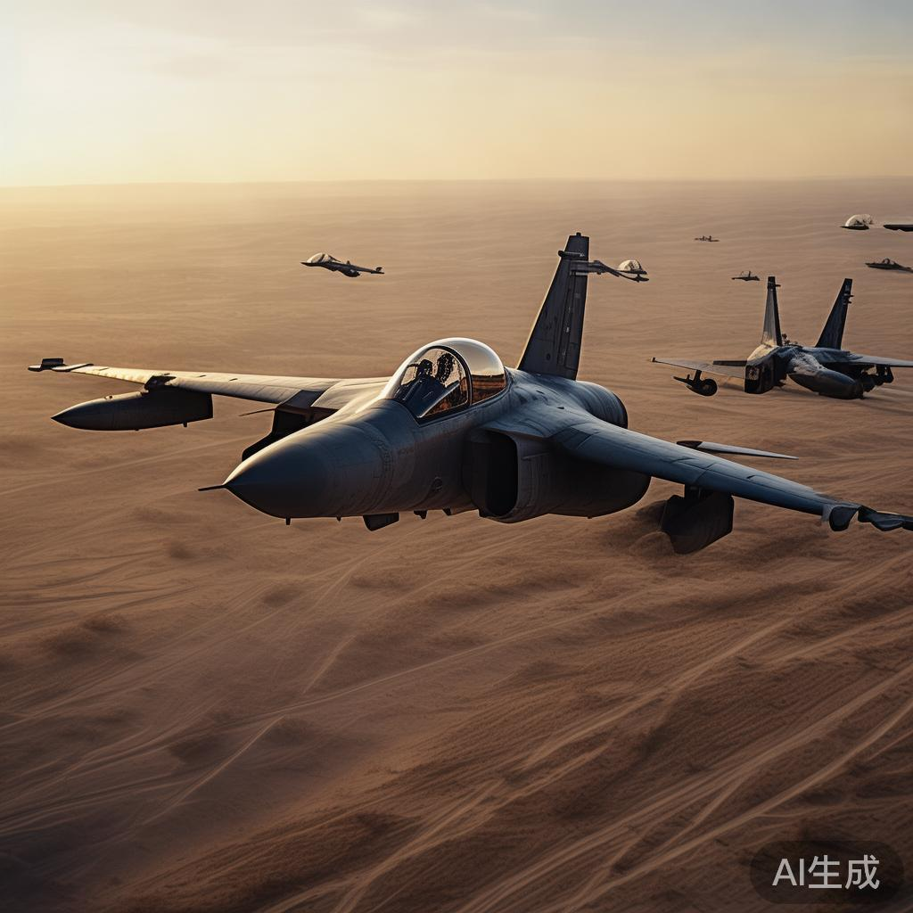
01
特朗普计划中期选举次日恢复对伊朗打击
据市场消息，美国政府已向海湾盟友通报，要求其做好最早11月4日（中期选举次日）发动短期而猛烈打击的准备。白宫计划在中期选举结束次日恢复对伊朗的军事打击，中东局势再度紧绷。
国际


据市场消息，美国政府已向海湾盟友通报，要求其做好最早11月4日（中期选举次日）发动短期而猛烈打击的准备。白宫计划在中期选举结束次日恢复对伊朗的军事打击，中东局势再度紧绷。
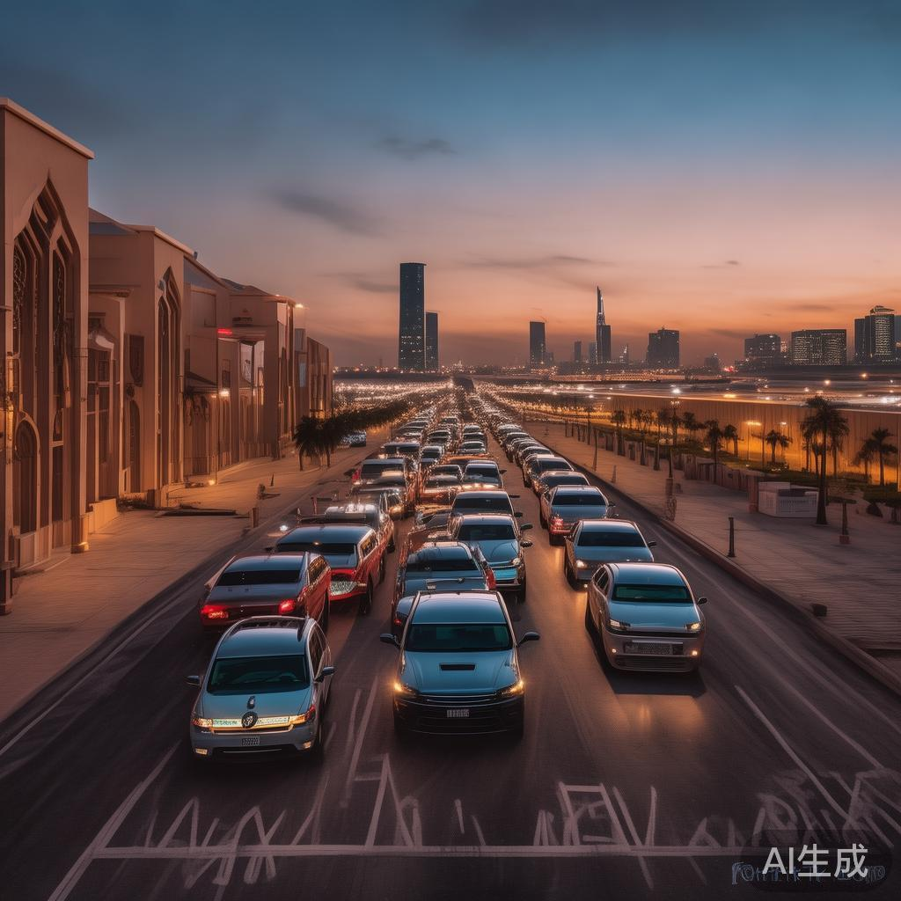
美国驻沙特大使馆宣布，国务院已下令非紧急岗位工作人员及其家属离开沙特，命令自10月23日起生效，理由是安全风险。同日沙特主导联军再次拦截胡塞武装导弹和无人机，海湾紧张局势持续。
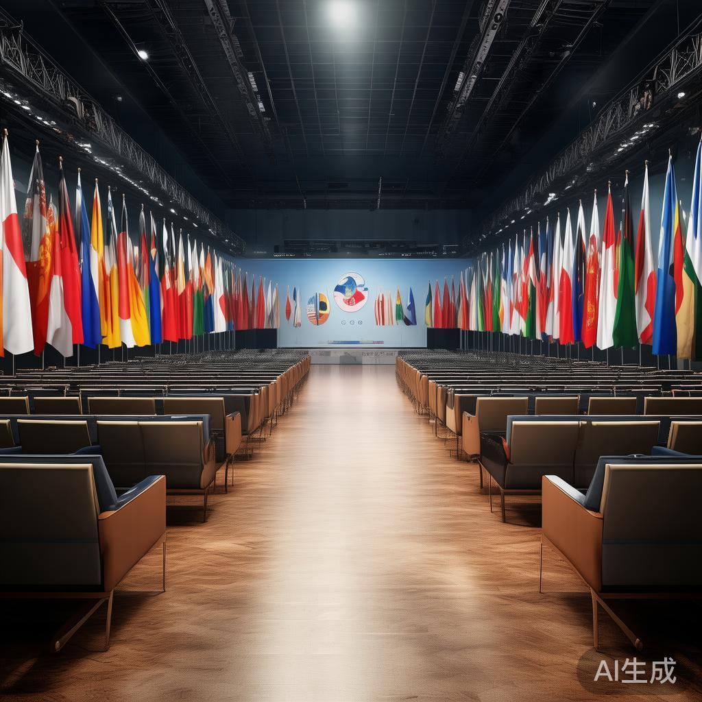
俄罗斯外交部通报，俄外长拉夫罗夫10月30日在亚特兰大出席二十国集团外长会期间，应日方请求同日本外务大臣茂木敏充简短交谈，强调日本停止对俄不友好做法是恢复俄日全面对话的必要条件，这是两国自2021年9月以来首次高层接触。
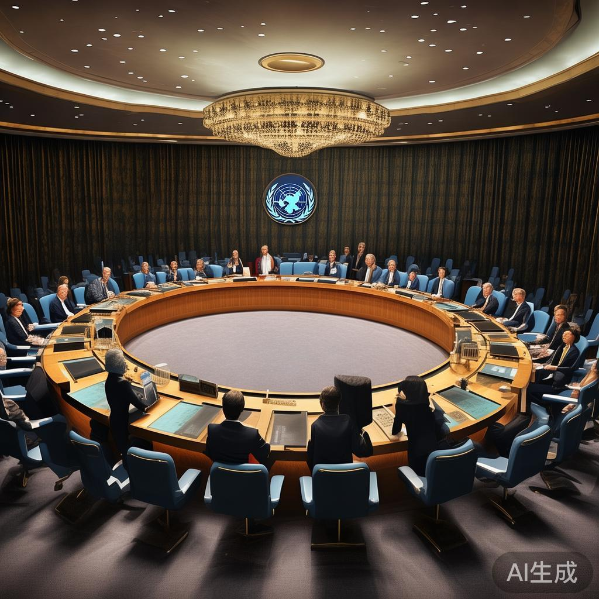
联合国安理会10月30日就下一任秘书长遴选举行第七轮意向性投票，结果不作官方记录不对外公布。候选人须获至少9票鼓励且五常均不劝阻方可获推荐。现任秘书长古特雷斯任期至今年12月31日，目前共有7名候选人角逐。
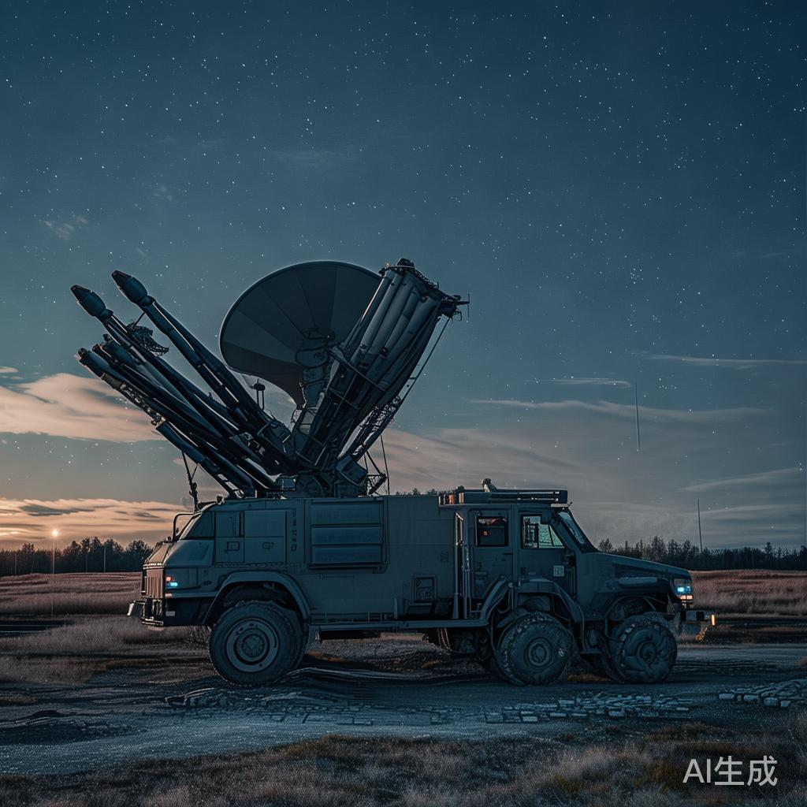
乌克兰总统泽连斯基对美国批准采购“爱国者”拦截弹表示欢迎，并请求美方加快交付防空系统。乌克兰近期频繁遭俄军大规模空袭，防空拦截弹缺口持续扩大，基辅方面寻求更多防空支援。
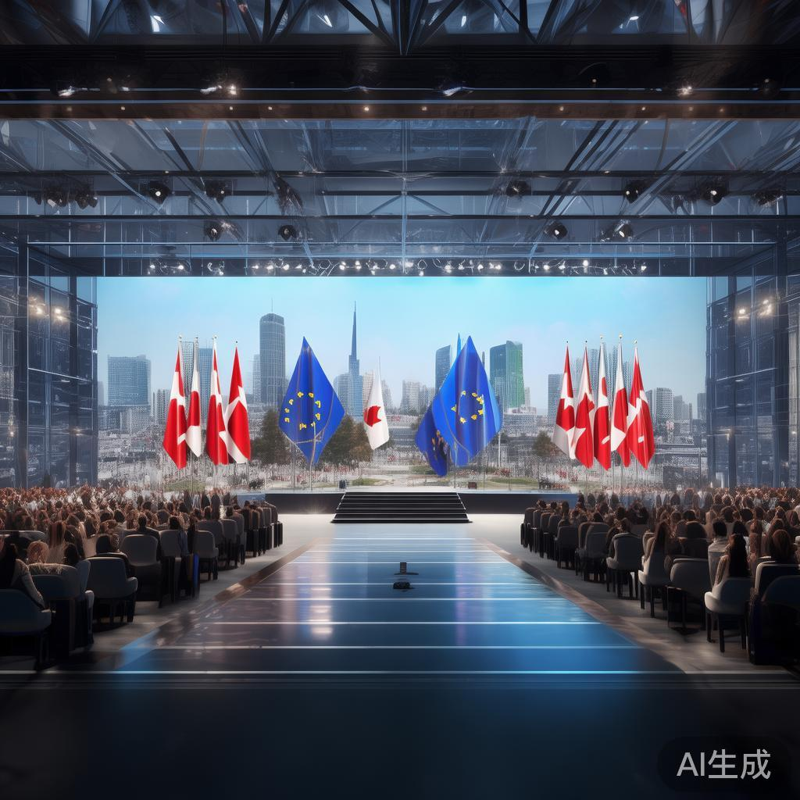
为期两天的第21届加拿大-欧盟峰会10月30日在蒙特利尔闭幕，加总理卡尼表示双方正构建“未来联盟”以实现共同繁荣，将在贸易、安全与关键技术等领域深化合作，共同应对全球不确定性。
据CME“美联储观察”，美联储12月维持利率不变的概率为28%，加息25个基点的概率升至72%；到明年1月维持利率不变概率19.3%，累计加息25个基点概率58.4%、累计50个基点概率22.3%。市场押注政策重新转向紧缩。
纽约商品交易所12月黄金期价10月30日早盘跌破每盎司4000美元关键心理价位后继续下探，午盘进一步跌破3900美元。金价短线快速下行，市场避险与抗通胀配置逻辑同步生变。
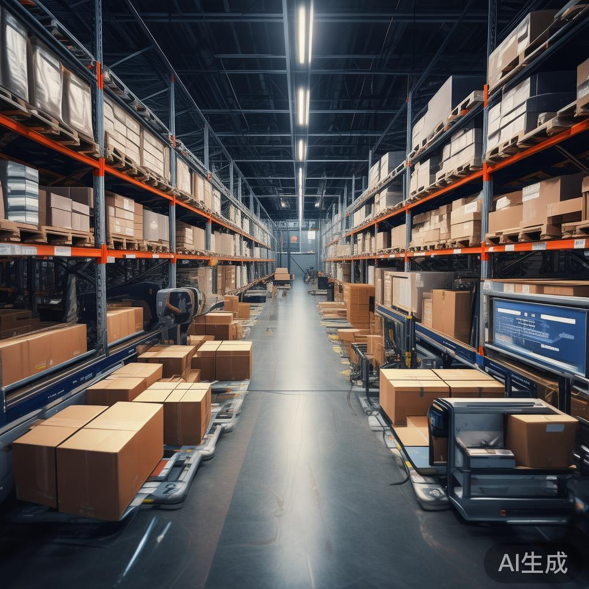
亚马逊在三季度财报后提交的季度文件中披露一项最高800亿美元的供应商融资安排，与以往发行的无担保公司债不同，此次融资直接与所购硬件挂钩并以部分资产担保，提款期为2027年初至2028年三季度。
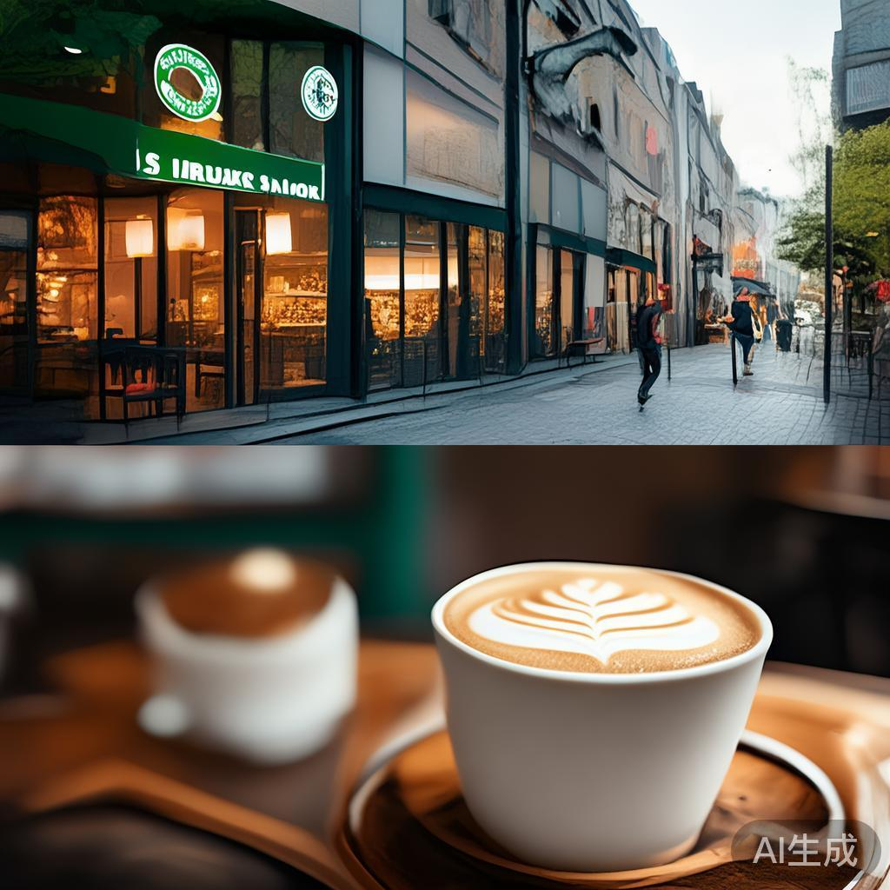
星巴克2026财年第四季度营收91亿美元，同比下降3.9%，主要因中国业务转为授权经营模式；调整后每股收益0.80美元，高于市场预期。
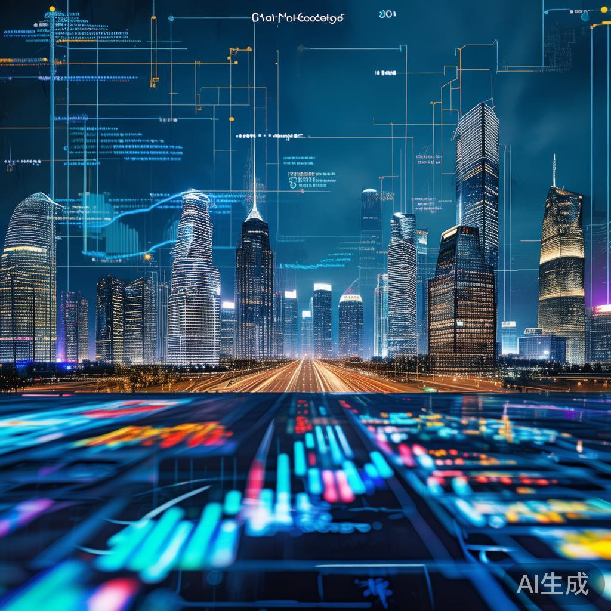
自9月28日以来股票型ETF连续19个交易日净流入，合计近4000亿元。三季报显示QFII三季度新进1050只股票前十大流通股东并增持创新药及红利股，社保基金现身超650股偏爱业绩增长标的，北交所37家公司前三季净利翻倍。
据拱北海关统计，港珠澳大桥珠海公路口岸自2018年10月开通以来，截至今年9月对APEC经济体进出口总值达1.09万亿元，大桥口岸连通效应持续释放，区域经贸往来更加紧密。
苹果与阿里巴巴宣布合作，将千问集成至Apple智能，中国用户可在Siri、写作工具及视觉智能中直接调用其文本与图像理解能力，11月4日起随iOS开发者Beta开放测试，12月随iOS 27.3正式版推出。同日苹果市值5.03万亿美元反超英伟达，重回全球第一。
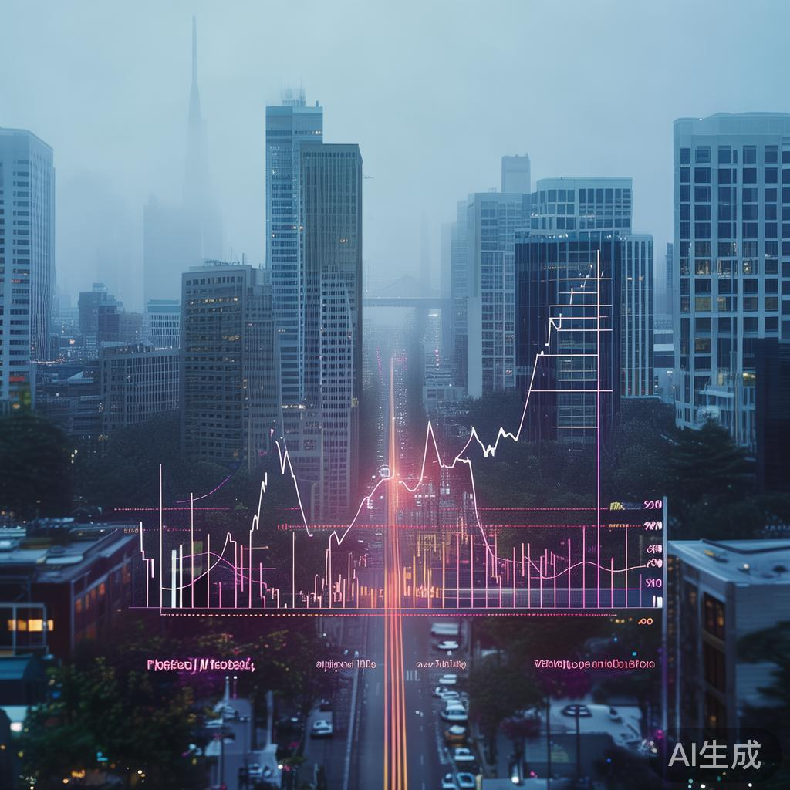
据知情人士，随着科技焦虑情绪升温，OpenAI已将本轮融资目标削减100亿美元。AI巨头巨额资本开支引发的担忧正从二级市场蔓延至一级市场融资。
知情人士透露，AI推理基础设施公司Baseten Labs料将按约300亿美元估值实施新一轮融资，较此前估值超过翻倍，显示AI推理侧算力需求持续走强，基础设施赛道资本热度不减。
全球最大规模60兆瓦液态空气储能国家示范项目成功并网发电，我国实现液态空气储能技术工程化、商业化重大突破，“把空气冷冻起来存电能”，为新型电力系统提供长时储能新方案。
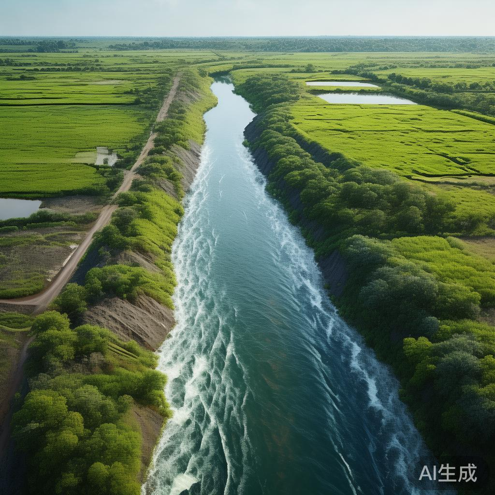
水利部消息，我国开展水资源调度的跨省江河已达89条，剩余5条按计划年底前启动调度。通过统一调度，永定河、西辽河、漳河等一大批断流河流重现生机，白洋淀、乌梁素海等湖泊湿地生态有效恢复。
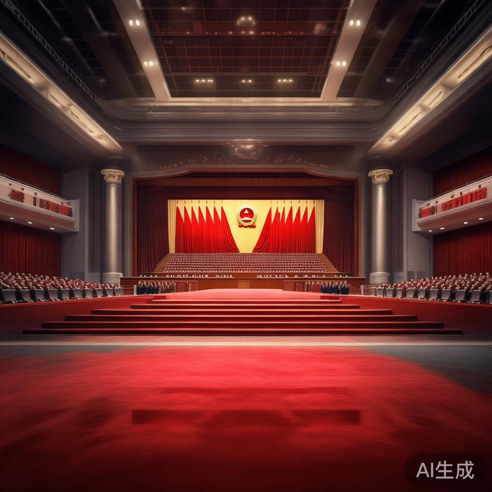
中共中央召开党外人士座谈会，就关于持之以恒推进全面从严治党若干重大问题的决定征求意见，习近平主持并发表重要讲话。人民日报头版今日刊发座谈会消息，集思广益完善相关重大部署。
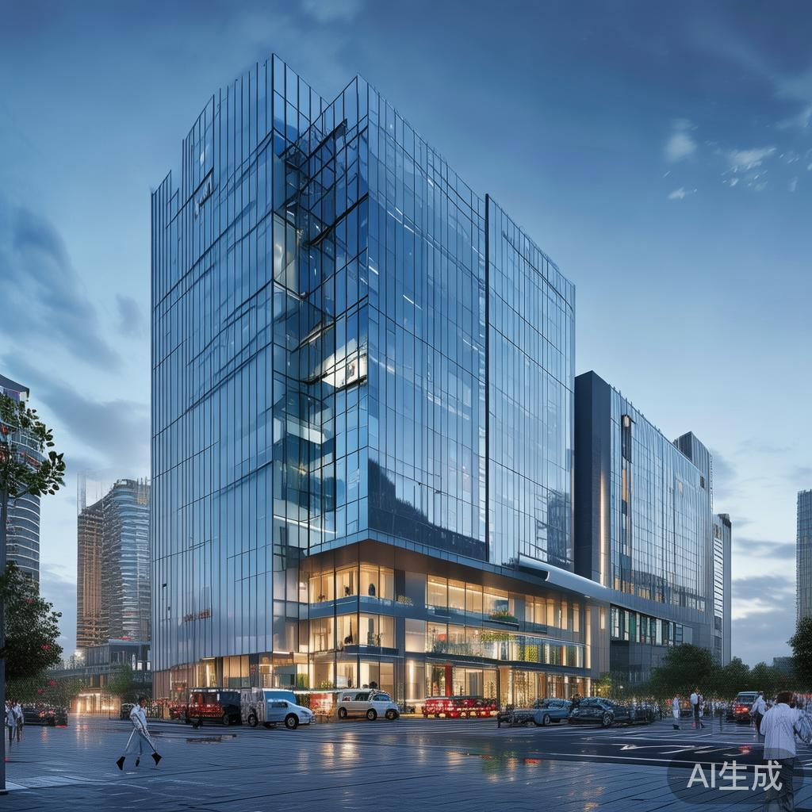
复旦大学附属中山医院青浦新城院区10月29日启动试运行。中山医院是全国首个综合类国家医学中心创建单位，新院区投用将提升上海郊区新城医疗服务能级，让市民就近看得上病、看得好病。
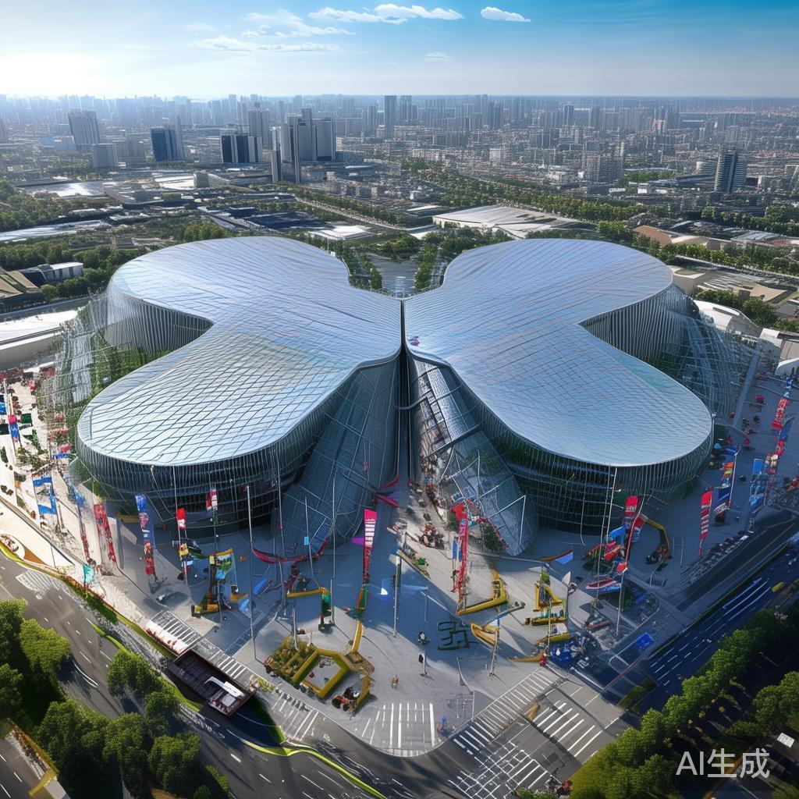
第九届中国国际进口博览会将于11月5日至10日在上海举办。本届展会全球首发产品云集，镶红宝石、蓝宝石、钻石与黄金的金羊毛勋章等珍贵展品提前亮相，进博展品正走入千家万户。
💬 评论区